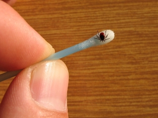

If knowledge is power, you would think I would never get Lyme disease after researching and writing The Lowdown on Lyme Disease four years ago. But in June 2006, while visiting an area where Lyme disease is common, I helped weed a perennial bed wearing shorts and flip-flops. Bad idea! I never saw the tiny tick that got me, but two weeks later I had hot, painful swelling on my side. At first I thought it was a super-chigger or spider bite, but it didn't itch. Eight days later, I was down for the count with chills, fever, body aches and a killer headache - all symptoms of Lyme disease.
The best way to prevent Lyme disease is to avoid areas in which ticks are prevalent. Wear a hat and light-colored clothing (to help you see ticks before they find skin), and tuck your shirt into your pants and your pants into your socks. When you can, cover as much skin as possible instead of dousing yourself with insect repellants. Be especially watchful if you live (or visit) where Lyme disease is common. The Northeast has the most cases, as reflected in these state-by-state statistics.
According to the U.S. Centers for Disease Control and Prevention, Lyme disease is an infectious disease caused by the bacterium Borrelia burgdorferi that, if left untreated, affects the joints, heart and nervous system. Symptoms include fever, headache, fatigue and a round, inflamed reaction at the site of the bite.
The deer ticks (also known as black-legged ticks) that transmit Lyme disease are so small they could pass for poppy seeds. If you have found one of these ticks imbedded in your skin, watch the bite closely for swelling and redness.
A bite from a Lyme-carrying tick is supposed to develop a bull's eye pattern of concentric rings that gradually increases in size, but mine was solid red, 2 inches across, hot to the touch, and painful rather than itchy. However, I found that holding a warm, moist washcloth over the inflamed bite revealed the hidden rings.
Get to a doctor when your symptoms are consistent with Lyme infection - flulike body aches and fever, and a seriously inflamed bug bite. A blood test may be ordered, but it may give negative results if you're just starting to get sick. Current clinical guidelines advise antibiotic therapy if symptoms appear within 30 days of a suspected tick bite.
Follow up with probiotics. The big-gun antibiotics used to treat Lyme disease kill helpful bacteria, too, so up your intake of probiotic foods such as yogurt, kefir, miso and tempeh once you’re through with the treatment. I've been making my own yogurt and kefir, because the fresh stuff has the highest counts of beneficial bacteria.
Antibiotics turned things around quickly, and I'm all better now, but my story would end differently had I not recognized the classic symptoms of Lyme disease. If it is not treated early, the Lyme disease bacteria can go on to cause arthritis, chronic fatigue, neurological deficiencies and generally mess up your life. But if you catch it in the first month, 14 days of antibiotics will usually kill the buggers.
|
 ISTOCKPHOTO/MARTIN PIETAK Deer ticks, or black-legged ticks, are the only known carriers of the bacteria that causes Lyme disease. |
|
|